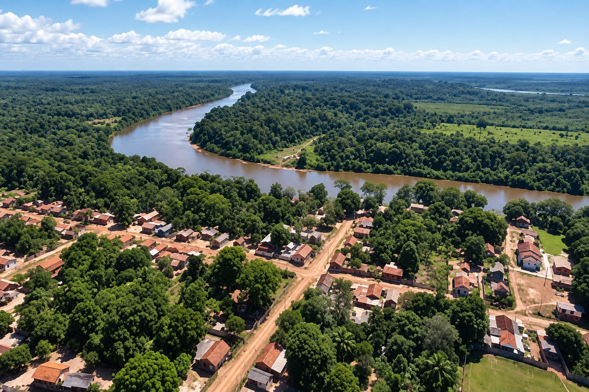
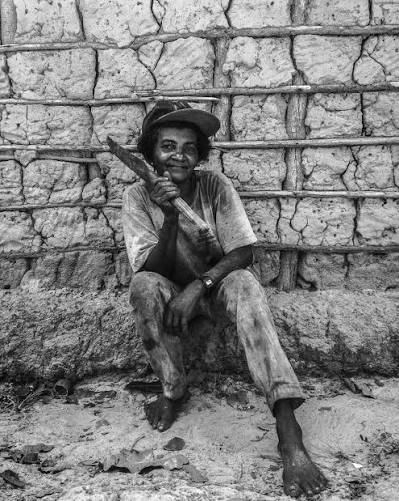
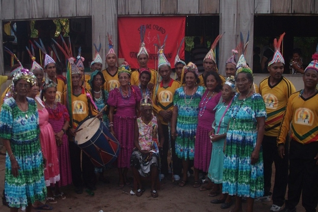
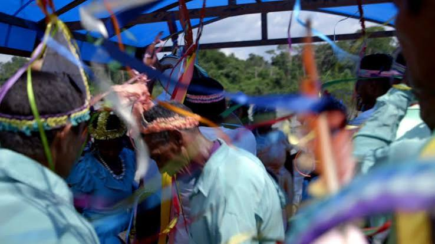
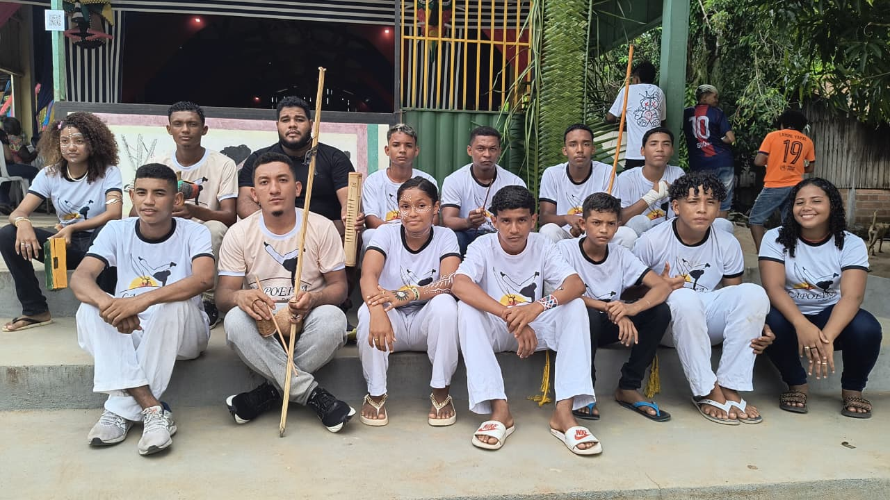
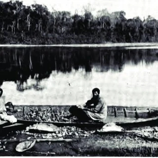
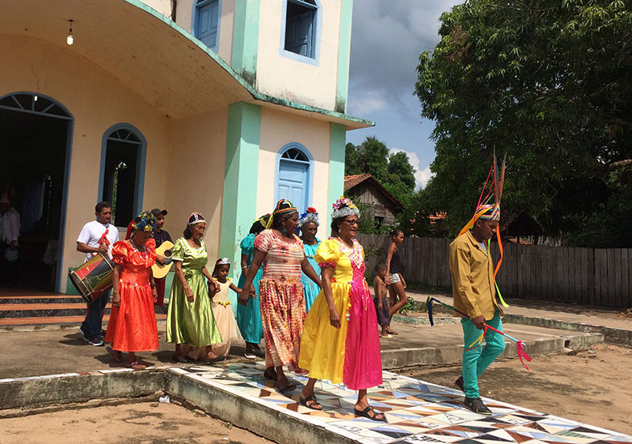
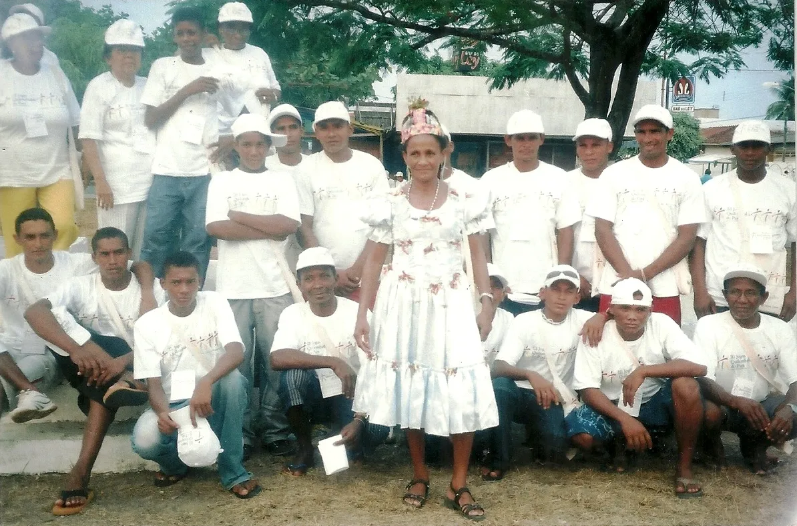

Território
O território faz parte da identidade e da relação da comunidade com seu ambiente.
Alenquer, Pará
Um espaço de memória, cultura e identidade, onde a história da comunidade permanece viva através de suas pessoas, tradições e território.

CONHEÇA
O Quilombo Pacoval representa um espaço marcado pela história, pela memória e pela identidade de sua comunidade.
Conhecer o Pacoval também significa conhecer as pessoas, os saberes, as tradições e a relação construída com o território ao longo do tempo. .
Além disso, a comunidade preserva saberes ancestrais, valorizando a agricultura familiar, o artesanato e práticas festivas únicas. Essa união fortalece a resistência diária e garante que as futuras gerações conheçam e tenham orgulho da própria história.
MEMÓRIA
A comunidade Pacoval é uma das mais antigas do município de Alenquer. Sua formação teve a participação de negros fugidos da Fazenda de Maria Macambira, localizada no município de Santarém.
O Quilombo Pacoval foi titulado em 20 de novembro de 1996 pelo então presidente Fernando Henrique Cardoso. Atualmente, a comunidade possui mais de 500 famílias e vem passando por importantes avanços relacionados às políticas públicas e à infraestrutura:
Hoje, o Quilombo Pacoval possui mais de 400 alunos (da Educação Infantil ao Ensino Médio) e abriga o Marambiré, importante manifestação cultural e patrimônio do estado do Pará.
Mesmo diante das dificuldades, o Pacoval continua sendo uma comunidade marcada por sua beleza, acolhimento, cultura, memória e identidade.

IDENTIDADE
O território faz parte da identidade e da relação da comunidade com seu ambiente.

Pessoas e gerações contribuem para manter vivas as memórias e experiências da comunidade.
Histórias e conhecimentos são compartilhados e preservados através das gerações.
REGISTROS
Registros visuais do território e da comunidade.






INTERAJA
Digite seu nome para receber uma mensagem personalizada.
Valorizar a história, a cultura e a memória das comunidades quilombolas é reconhecer a importância de suas histórias.